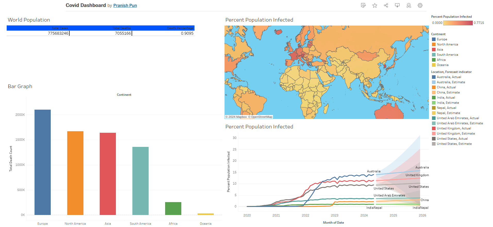
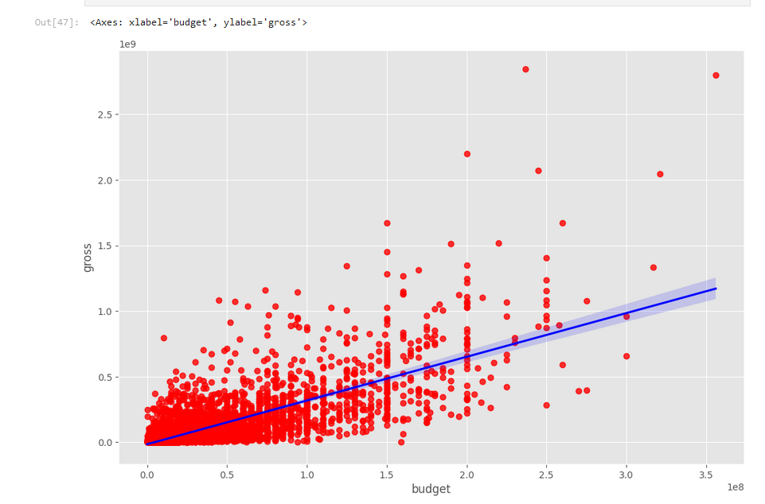
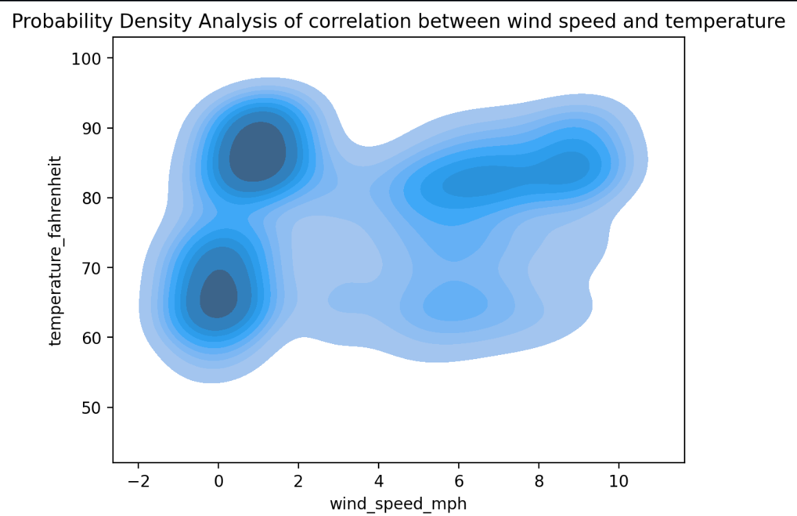
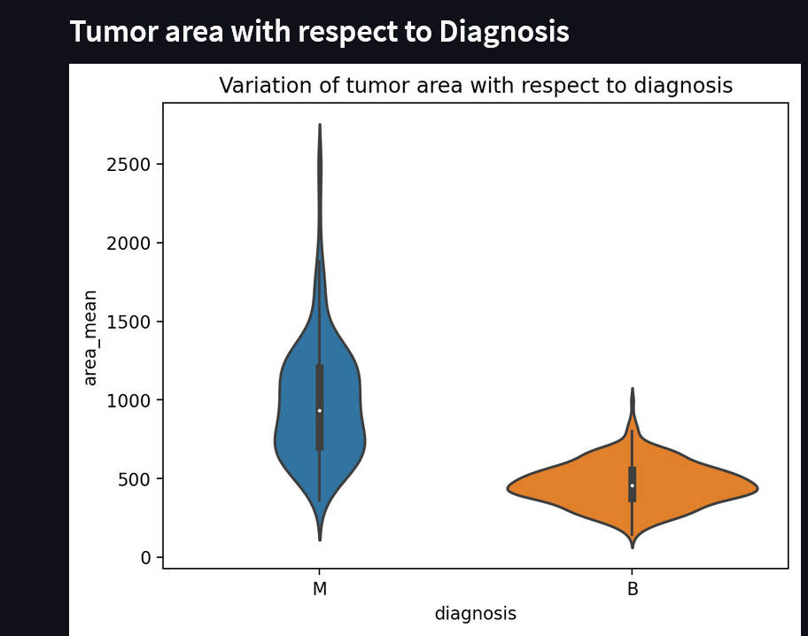

I am a dedicated and proactive Bachelor of IT student with a strong interest in policy and strategy, and a keen enthusiasm for data
analysis and coding. My academic background and hands-on experience have equipped me with a solid foundation in database design and data analyst, cybersecurity
complemented by practical skills in data collection, analysis, and reporting.
I have hands-on experience with various coding languages and tools, including SQL and Python, which I have utilized for both data and spatial
analysis. My proficiency extends to high computer literacy, including extensive use of the MS Office365 suite. These skills have
been demonstrated through projects below.
In addition to my technical capabilities, I possess strong writing and communication skills, allowing me to effectively convey complex information
and insights. My ability to articulate findings and recommendations is complemented by my enthusiasm for policy and strategy development.
I am eager to contribute my skills and learn more through an internship opportunity, where I can apply my technical and analytical abilities while
gaining valuable experience in a dynamic environment.
View Projects in Github
Covid data
exploration in SQL

The primary objective of this project is to perform comprehensive data exploration and analysis using SQL on datasets related to COVID-19 deaths and vaccination efforts. This exploration aims to derive insights into the relationship between vaccination rates and COVID-19 mortality rates across different demographics, geographic regions, and time periods.
View Code

The goal of utilizing Tableau in this project is to visually present the insights derived from the SQL-based data exploration of COVID-19 deaths and vaccination data. By leveraging Tableau's powerful visualization capabilities, we aim to create intuitive and interactive dashboards that effectively communicate key findings to stakeholders and decision-makers.

Analyzing movie data to uncover correlations involves several essential steps in Python. Initially, data is loaded from sources such as CSV files or databases into a Pandas DataFrame. Cleaning and preparing the data follows, including handling missing values and converting relevant columns to numeric types for accurate analysis. Exploratory data analysis (EDA) techniques, like computing descriptive statistics and creating visualizations using libraries such as Matplotlib and Seaborn, help understand the distribution and relationships among variables like budget, gross earnings, and ratings. The primary focus is on calculating correlation coefficients using df.corr() in Pandas, which provides insights into how variables like budget and gross earnings relate to each other. Visualizing the correlation matrix through heatmaps aids in identifying strong positive or negative correlations. Interpretation of correlation results emphasizes understanding the strength and direction of relationships, supporting insights into factors influencing movie success.

This Streamlit app utilizes Python to fetch and display current weather information for various locations in Bangladesh. Users can select from a dropdown menu to view the current weather conditions, including temperature, humidity, wind speed,
and weather description (e.g., clear sky, rain, etc.). The app also features a visual representation of the weather conditions using icons for better user experience.

The Streamlit app offers an interactive and user-friendly interface for exploring and analyzing breast cancer data among women. It provides dynamic visualizations of key statistics, including incidence rates, survival rates, and demographic distributions. Users can customize their analysis with filters based on age, geographic location, and other variables to gain detailed insights into the patterns and trends of breast cancer. The app also features trend analysis to track changes over time and assess the impact of medical advancements.
With comprehensive reporting and downloadable summaries, the app serves as a valuable tool for researchers, healthcare professionals, and anyone interested in in-depth breast cancer statistics and trends.